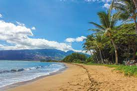

Hawaje
Pierwsze miejsce które warto odwiedzić na Hawajach to Park Narodowy Wulkany Hawai'i:
Utworzony w 1918 roku, Park Narodowy Wulkany Hawai'i położony jest na Hawajach i wyróżnia się wyjątkowym, wulkanicznym krajobrazem. Znajduje się także na liście światowego dziedzictwa UNESCO. Na jego terenie leży wulkan Kilauea, którego erupcja rozpoczęła się 3 stycznia 1983 roku i trwa do dziś. Wznosi się on na wysokość 1247 m n.p.m. Według wierzeń Hawajczyków jest siedzibą bogini Pele, a wybuchy są spowodowane jej złością. Wpływająca wówczas do oceanu lawa tworzy niesamowity obraz.
Kolejnym miejscem wartym do odwiedzenia na Hawajach to Park Narodowy Haleakala:
Park Narodowy Haleakala znajdujący się na wyspie Maui, pierwotnie był częścią Parku Narodowego Wulkany Hawai'i, jednak ostatecznie został on oddzielony. Rozciąga się na powierzchni 118 km kw., z czego aż 100 km kw. to tereny nienaruszone przez człowieka. Turyści mogą zwiedzać park tylko specjalnie wyznaczoną krętą drogą, prowadzącą wzdłuż nawietrznej części wyspy. Jego nazwa w języku hawajskim oznacza "dom słońca", a miejscowe legendy podają, że heros Maui uwięził tu słońce, aby dzień trwał dłużej.